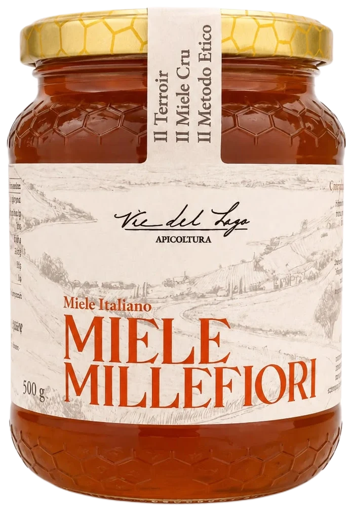

01 / 03
Cuvée delle Colline · Polifiora
Millefiori
Complessa polifonia botanica
Le fioriture spontanee dei pendii argillosi intorno al lago, raccolte tra maggio e luglio. Ambra profondo, note di caramello, fiori secchi e macchia mediterranea.
Con pecorino stagionato, arrosti, pane di segale.